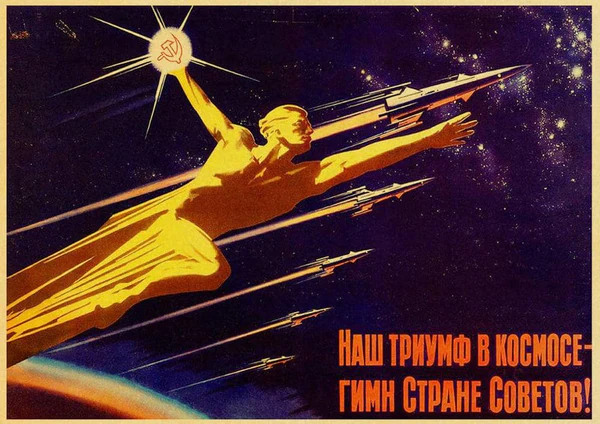

Présentation
L'Union soviétique a été la première à réussir plusieurs exploits dans la course à l'espace. En 1957, ils ont lancé Spoutnik, le premier satellite artificiel, marquant le début de l'ère spatiale. En 1961, Youri Gagarine est devenu le premier humain à voyager dans l'espace avec la mission Vostok 1. D'autres missions, comme Luna 2 (le premier objet à atteindre la Lune) et Venera 7 (la première sonde à atterrir sur Vénus), ont consolidé la position de l'Union soviétique en tant que pionnière de l'exploration spatiale.
